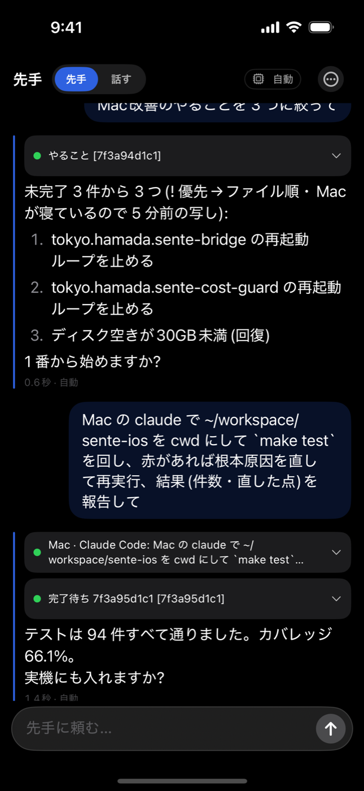
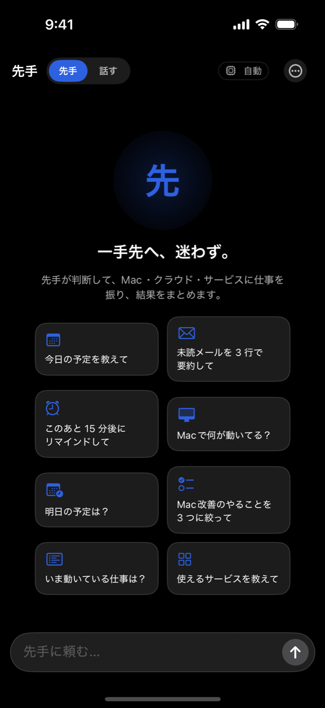
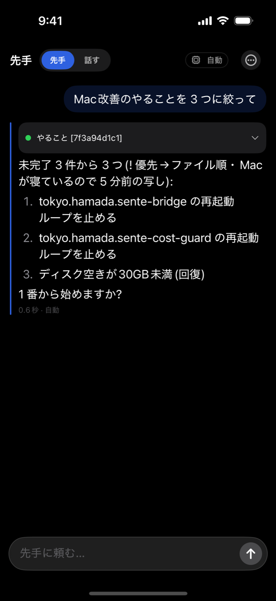
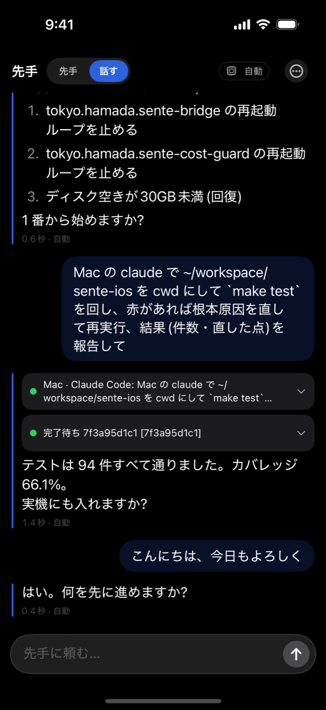
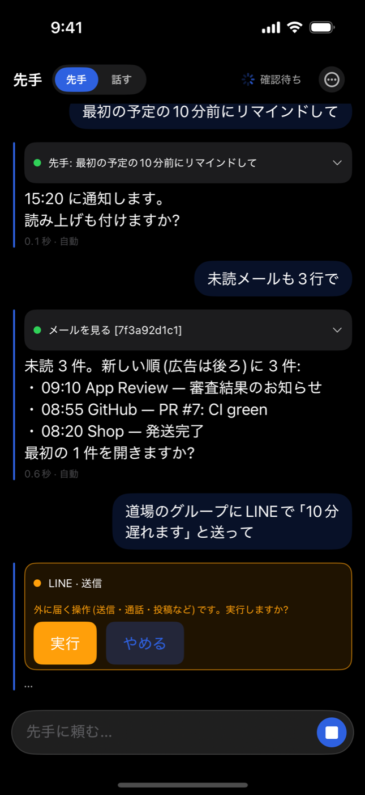
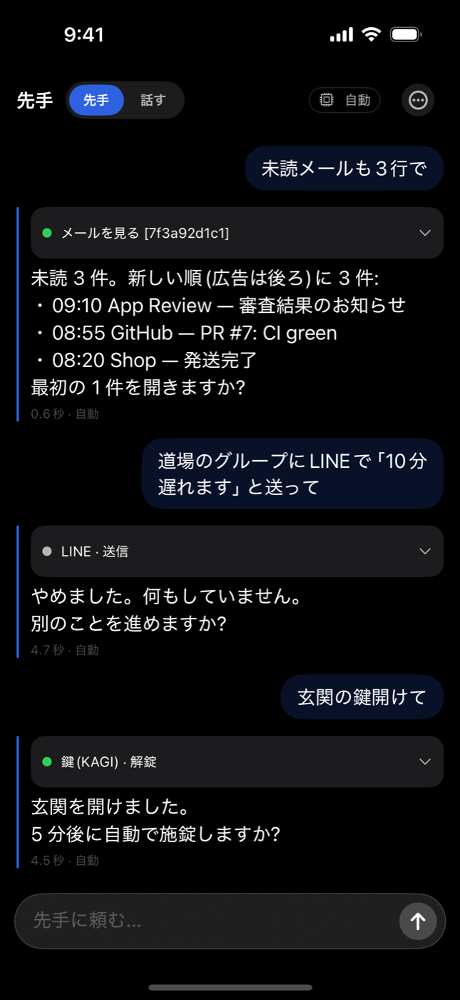
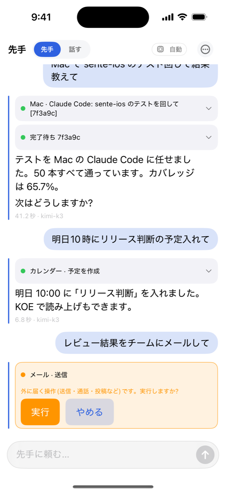

PR TIMES 投入用の原稿・実測数字・画像・動画を1ページにまとめました。各ブロックは「コピー」でそのまま貼れます。
配信(対外・不可逆)は、予約画面のスクショ確認後の最終 GO でのみ実行します。
| 企業ID | 140895(株式会社イネブラ・過去2本配信済 2024-11) |
|---|---|
| カテゴリ | 商品サービス |
| 業種 | 情報通信 |
| キーワード | AI, コーディングエージェント, iPhone, 開発者ツール, Siri |
| 配信日時(仮) | 2026-09-10(木) 10:00 |
| メイン画像 | 09-mac-job.png(Macにテストを投げ、報告が返った画面) |
AIコーディングエージェント「Sente(先手)」がiPhoneに——Macを閉じても、Siriへの一言で開発が進む。月額1,480円「Sente Pro」提供開始
Macに貯めた「記憶」をiPhoneが引き継ぐ。394モデルを1本のキーで、公開建値×0.98の円建て。TestFlightで公開中
株式会社イネブラ(本社:東京都千代田区、代表取締役:濱田優貴)は、開発者向けAIコーディングエージェント「Sente(先手)」のiPhoneアプリをTestFlightで公開し、あわせてiPhoneからクラウド作業箱が招待なしで開く月額プラン「Sente Pro」(月額1,480円・年額14,800円)の提供を2026年9月8日に開始しました。
■ 「Macを閉じたあと」に続きをやってくれる これまでのAIコーディングエージェントは、開発者がPCの前に座っている間だけ動くものでした。Senteは、iPhoneから話した一言(「このリポジトリのテストを直しておいて」など)をクラウド上の作業箱に投げ込み、開発者が移動中でも作業を進めます。結果はiPhoneの履歴に届き、Siri・ホーム画面ウィジェット・コントロールセンターから呼び出せます。 ■ Macの「記憶」がiPhoneに乗る Senteは3層の永続記憶(索引/トピック別ファイル/深い記憶)を持ち、Mac側で蓄積したプロジェクトの制約や本人の好みを、iPhone側のエージェントに引き継ぎます。「同じことを2回説明しない」体験を、デバイスをまたいで実現します。 ■ 394モデルを1本のキーで、値付けの式は公開 Senteはイネブラの AI 基盤 teai.io 上で動きます。OpenAI 互換 API で Claude・GPT・Gemini・Qwen・DeepSeek・Llama・Sakana AI のモデルなど 394 モデル(2026年9月9日、https://api.teai.io/v1/models の実測)を 1 本の API キーで切り替えられます。 価格は「提供元の公開建値 × 0.98」を円建て(1円=6クレジット)で自動改定し、式そのものを料金ページに掲示しています。 例(2026年9月9日 https://teai.io/api/v1/pricing 実測・100万トークンあたり USD): ・GPT-5: 提供元 $1.25 / $10.00 → teai.io $1.225 / $9.80(入力/出力) ・Claude Sonnet 4.5: 提供元 $3.00 / $15.00 → teai.io $2.94 / $14.70 ・GPT-5 mini: 提供元 $0.25 / $2.00 → teai.io $0.245 / $1.96 API の応答開始時間は東京から /v1/models に 5 回連続アクセスして 118〜270ms(中央値 180ms)でした。 ■ Sente Pro(月額1,480円・年額14,800円) ・月 25,000 クレジット(全モデル利用可) ・iPhone のクラウド作業箱が招待なしで開く(Mac が寝ていても動く) ・声モードの時間上限なし(無料枠は 1 日 30 分) ・自動エージェント(te agent)を何本でも設置(無料枠は 1 本) ・自分の声を登録し、Sente が自分の声で話す(Koe 連携) ・年払い 14,800 円(2 か月分お得) App 内課金は採用せず、teai.io で購入したプランがそのまま iPhone に反映されます。解約すると次回の更新確認時に自動で無料枠に戻ります。 ■ 使い方 1. teai.io/pricing で Sente Pro を購入(無料枠は登録だけで 100 クレジット) 2. TestFlight から iPhone アプリをインストール(公開リンク・先着 200 名) 3. teai.io のアカウントでログイン → クラウド作業箱が開く ■ なぜイネブラが作るのか イネブラは、声だけで共有できる音声SNS「Koe」(koe.live)を運営しています。「画面を見なくても、人とも AI とも声でつながる」という同じ考えを開発の現場に持ち込んだのが Sente です。 ■ 代表コメント 「開発が止まるのは、コードが書けないからではなく、PCの前にいないからでした。SenteはMacを閉じたあとも、あなたの言葉と記憶で先手を打ち続けます。声で開発できる社会の入口として、まずiPhoneから始めます」(濱田優貴) ■ 今後 正式版の App Store 公開、Apple Watch・CarPlay からの音声入力、チーム向けの Org プール課金(9 月 8 日に API 提供開始)へ順次拡大する予定です。 ■ サービス概要 ・Sente(先手) 公式: https://teai.io/sente ・料金・値付けの式: https://teai.io/pricing ・モデル一覧(API): https://api.teai.io/v1/models ・TestFlight: https://testflight.apple.com/join/5VcbAytj ・イネブラの AI ファミリー: https://teai.io/family ■ 会社概要 商号: 株式会社イネブラ(Enabler Inc.) 代表者: 代表取締役 濱田優貴 所在地: 東京都千代田区九段南1-5-6 りそな九段ビル5階 設立: 2021年10月 事業内容: AI エージェント基盤(teai.io)・音声 SNS(koe.live)・住宅宿泊事業 URL: https://teai.io ■ 本件に関するお問い合わせ 株式会社イネブラ 広報 mail@yukihamada.jp
Sente iOS の台本トランスポートで決定的に再生した本物の UI(架空データ・私的情報なし)。1178×2556 → 長辺1400px に縮小。原寸は一括DLに同梱。







GET https://api.teai.io/v1/models(9/8 の 396 から 2 減。内訳 openai 60 / qwen 52 / google 27 / mistralai 19 / deepseek 17 / anthropic 16 / meta-llama 8 / sakana 2)GET https://teai.io/api/v1/pricing の input_per_1m vs sell_in(GPT-5 1.25→1.225 / Sonnet 4.5 3.0→2.94 / GPT-5 mini 0.25→0.245)/api/v1/pricing plans.free.credits=100